Forget about the weather, "So, how about that Trump guy?" has become the preferred way of starting smalltalk for people around the globe.
In my last guide, I showed you how to mine social media sites with ParseHub and send the text through a sentiment analysis tool. Now I will show you how I used this information to come up with the results of my article about the Donald Trump and his opponents in this year's Presidential Primaries.
You will see some of the ways you can manipulate your own social media data with this powerful combination of software. If you see a mistake in my data tables or in my Python code then please let me know, in the comments below or in a personal email to quentin@parsehub.com.
Converting to datetime format
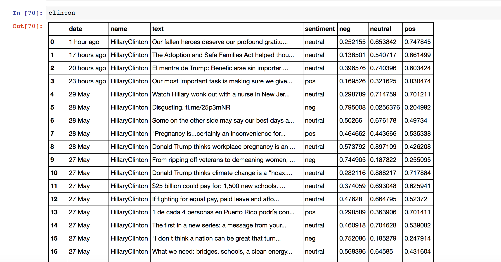
The DataFrames that I saved had 7 columns: "date", "name", "text", "sentiment", "neg", "neutral" and "pos". Since I was making plots over time, I had to convert the "date" columns of my DataFrames, which were strings, into a form that computers can work with, called datetime format. I wrote a simple function to do this.
The form that snapbird gives dates is inconsistent. If the tweet was sent on the same day of your search, the date is given as time elapsed since it was tweeted, such as "8 hours ago" or "23 minutes ago". The first thing my function did was use a regular expression to check if the string ended with "ago". If it did, it was replaced with "May 30".
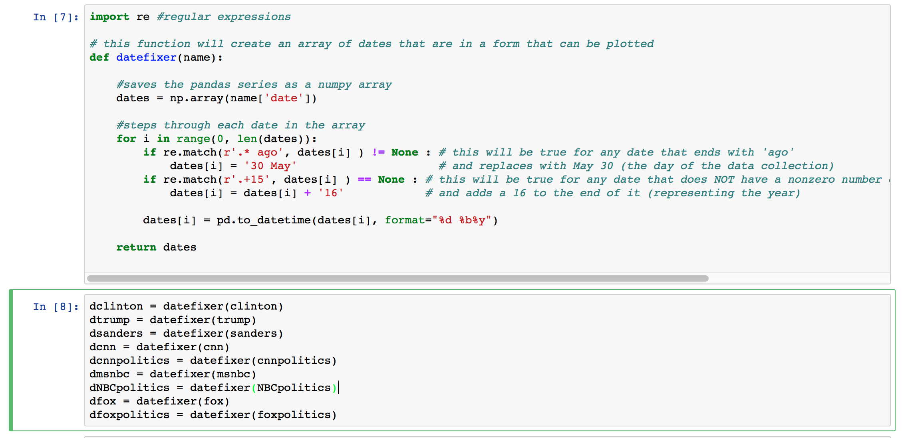
The next thing it did was check to see if the string ended in 15, as in 2015. The dates of tweets from 2016 did not end in 16, so its adds a 16 to any date that did not end in 15.
Finally, each date in the column was in the same format. That meant I was able to convert each one to a datettime using the pandas function to_datetime.
Counting the number of times a candidate was mentioned
- I compiled lists of every tweet that mentioned a candidate's name. This was done with more regular expressions.
- Some of the candidates are well known enough that they could have been mentioned by their first or last names only, or by nicknames, or by their twitter handles.
- The tweets that matched any of these "part names" were then added to a new DataFrame for the particular account that tweeted their name.
The function drops any duplicated tweets, which would be duplicated simply because the person's first and last name were mentioned. It did however preserve duplicates of tweets that mention more than one candidate, since the candidate's name in the column "name" would be different.
I had to run this for for each network, for each candidate. You can do this the easy way with a for loop, or do what I did and just copy and paste it a few times.
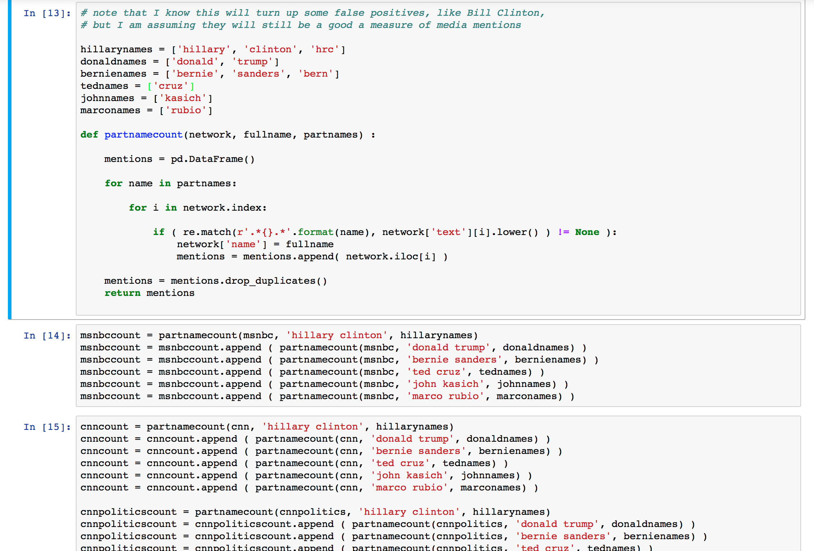
I converted all the dates in the "date" column to the datetimes that I found.
- Another function stepped through each tweet to
count the number of times that each name received a mention. Each of these tweets were all in a new DataFrame. You can see what mine looked like in the screenshot below.
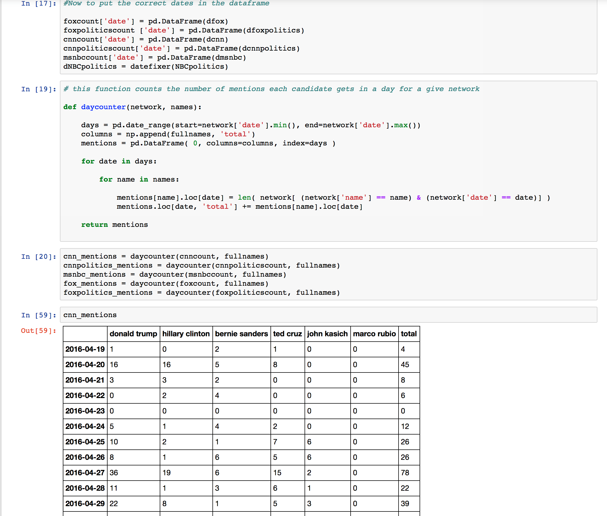
I used pylab to plot these results as a line graph over time. I plotted all 6 candidates on one graph, for each news twitter
account.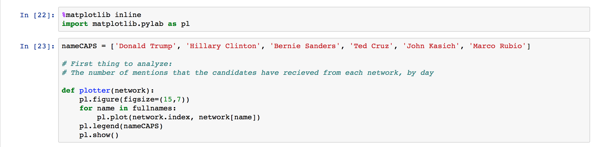
Because the time scale of some plots was much longer than the others, the plots over time looked choppy and harder to read than the ones with a shorter time scale. I wrote a function that would count the number of mentions that a candidate received over a number of days, and plotted those results instead.
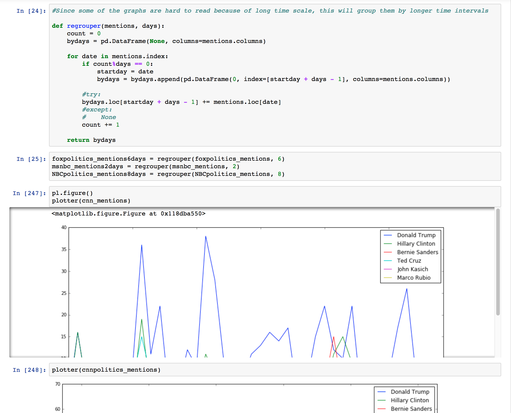
I then decided that the plots of all 6 candidates were too busy, and split up the plots by political party.
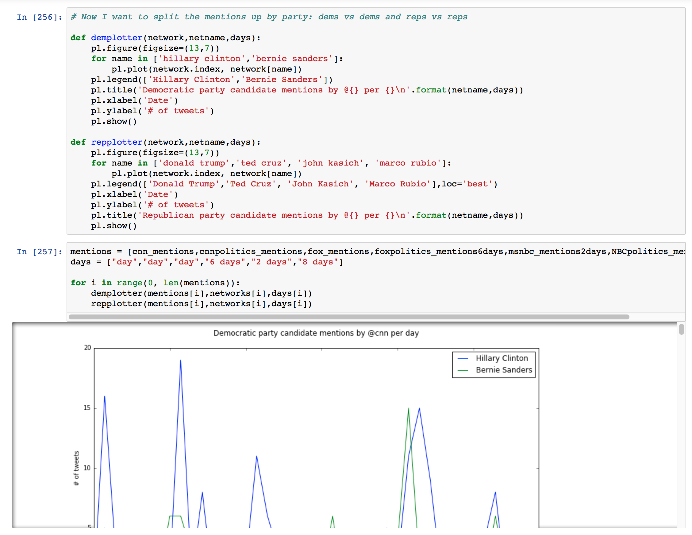
Finding percentage of tweets mentioning any candidate
- To do this, I took only the "text" columns of each DataFrame and dropped the duplicates so that tweets that mentioned more than one candidate were only counted once.
I divided the length of this series by the total number of tweets that I had from the
twitter account.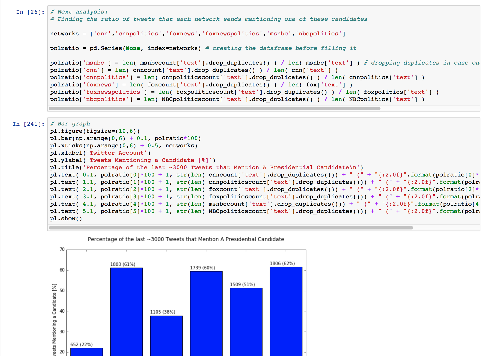
Finding the percentage of tweets mentioning a specific candidate
I only counted the number of mentions after May 10, since that is the first day that I could collect tweets from @foxnews. This
required me to index the pandas DataFrames using logical indexing.
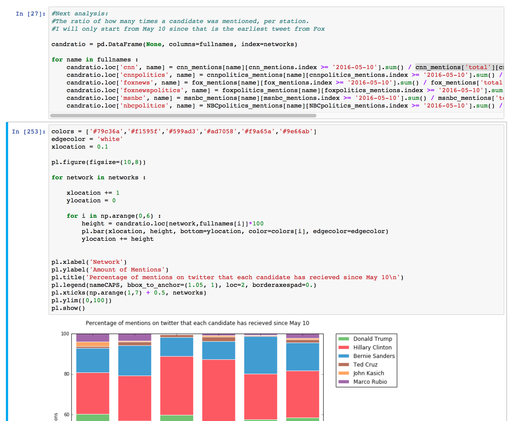
I used this guide to help me make the stacked bar graph. Here are what the long lines of code in the for loop look like (I couldn't fit them into the screenshot):
candratio.loc['cnn', name] = cnn_mentions[name][cnn_mentions.index >= '2016-05-10'].sum() / cnn_mentions['total'][cnn_mentions.index >= '2016-05-10'].sum()
Remember that the table cnn_mentions has the number of times each candidate was mentioned on each day by @cnn, so by summing the number of mentions after May 10 and dividing by the total number times a candidate was mentioned after May 10 gives the percentage of tweets that related to each candidate.
This was saved in a DataFrame with the index of the network name and the column of the candidate's name. You can see what this looks like in the table below.
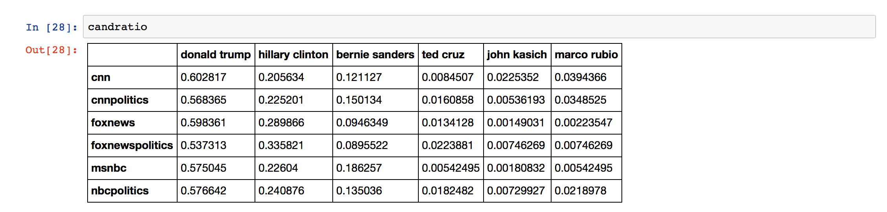
In the article, I also made a graph of the candidates as they were mentioned between February 10 and May 10 by the accounts @foxnewspolitics and @nbcpolitics. I did this again with logical indexing. The code looks like:
candratio2.loc['foxnewspolitics', name] = foxpolitics_mentions[name][(foxpolitics_mentions.index <= '2016-05-10') & (foxpolitics_mentions.index >= '2016-02-10')].sum() / foxpolitics_mentions['total'][(foxpolitics_mentions.index <= '2016-05-10') & (foxpolitics_mentions.index >= '2016-02-10')].sum()
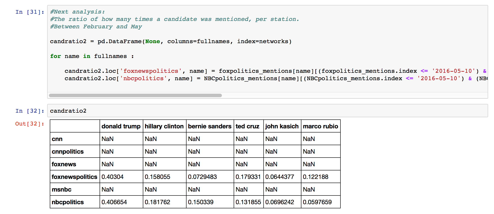 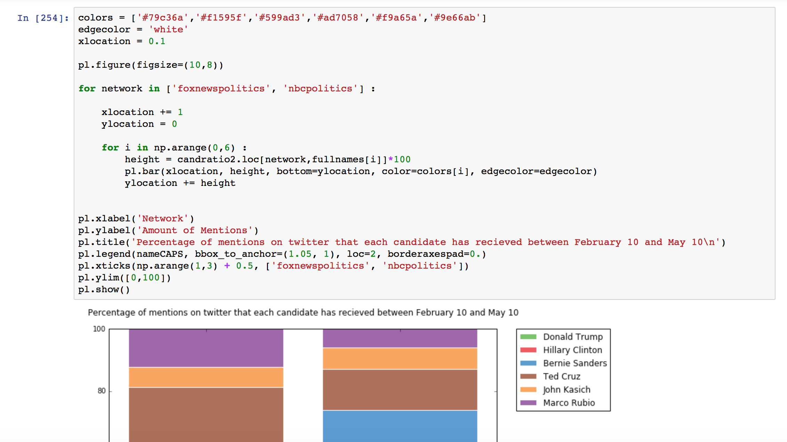
Counting the sentiment of each networks
I created an empty DataFrame with MultiIndex columns, the first level for the candidate names and the next level for the sentiment, with:
candsentiment = pd.DataFrame(None, index=networks, columns=pd.MultiIndex.from_product([fullnames, moods],names=['first','second']))Then I filled it with a function that, like before, stepped through each candidate's name and each of the three possible sentiments, and counted the number of tweets that met both conditions:
candsentiment.loc[network, (name, mood)] = len(networkcount[np.array(networkcount['sentiment'] == mood) & np.array( networkcount['name'] == name)])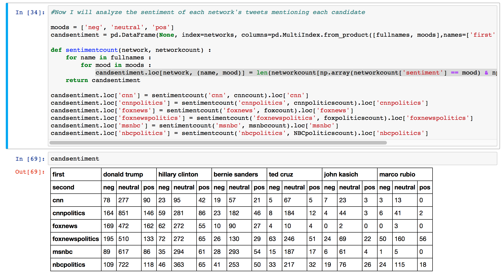
I graphed the results in more stacked bar charts.
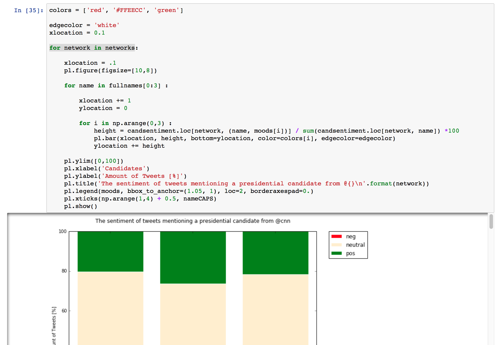
This was the same way that the ratio of pos/neutral/neg was found for Hillary Clinton, Donald Trump and Bernie Sanders.
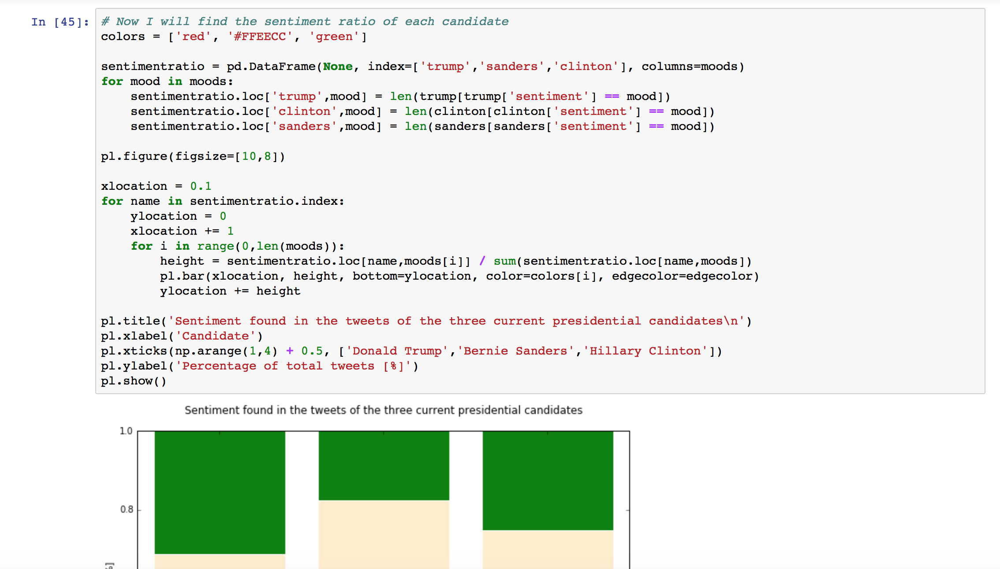
Counting how many times a candidate was negative/neutral/positive when they mentioned someone else
This was a combination of logical indexing and regular expressions. It took quite a bit of code since I couldn't easily loop through arrays of values: I had to hard code the "part names" that I used earlier, like "hillary", "clinton" and "hrc", and connect them with "and"s.
- I set up a DataFrame filled with 0's. The index is "Donald Trump", "Hillary Clinton" and "Bernie Sanders" the three people whose accounts I was investigating. The columns were MultiIndex, with someone who they have mentioned in a tweet and the sentiment of the tweet.
Every time I found a tweet that mentioned one of the candidates, the value of the cell with the sentiment of the tweet was increased by 1.
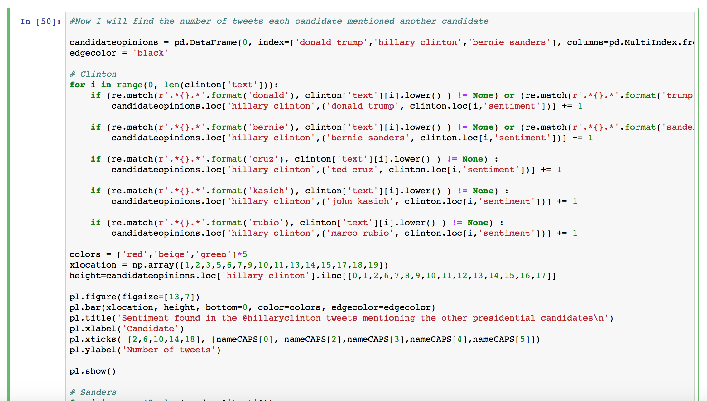
Here is the resulting table:
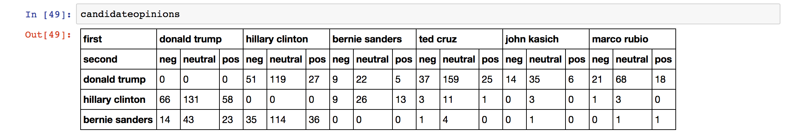
I hope this guide gave you inspiration to try your own textual analysis on twitter. Twitter is a place where the world goes to express their opinions and where trends take off.
ParseHub will give you the text from any social media site you are interested in. Learning regular expressions will let you search for certain phrases within that text, and sentiment analysis will give you the opinions of the posts from the users you are targeting. Keep up with the trends with this powerful tech know-how!